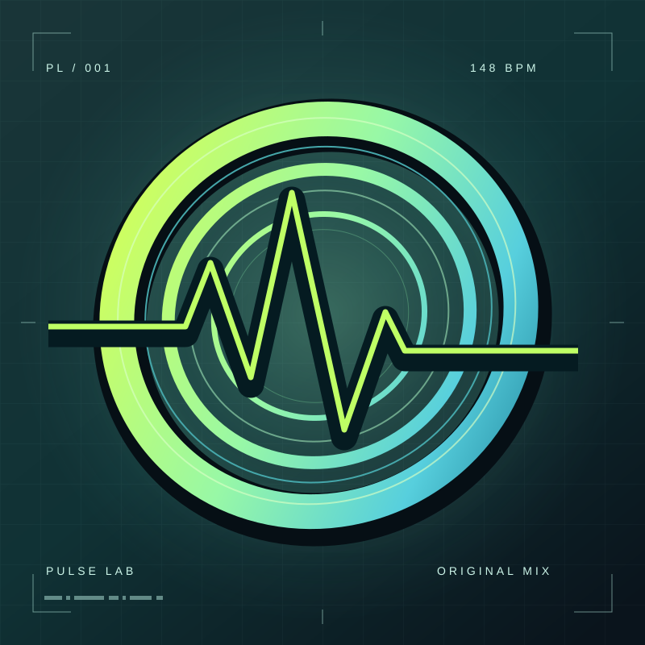
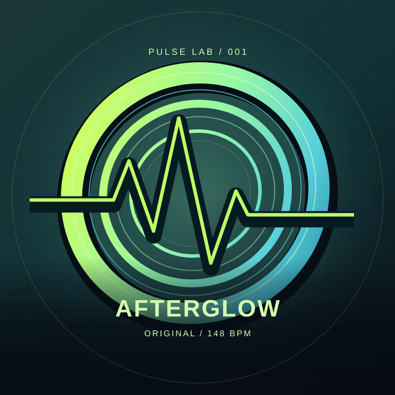
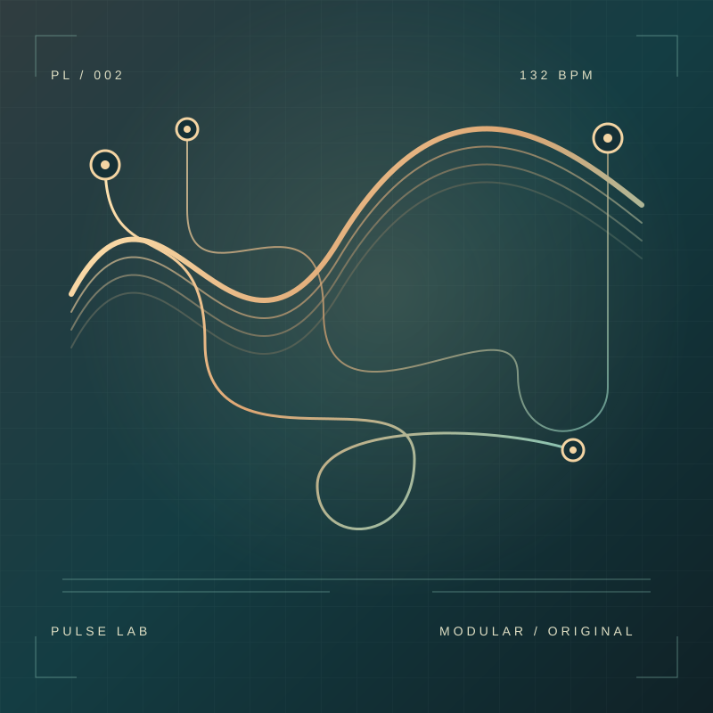
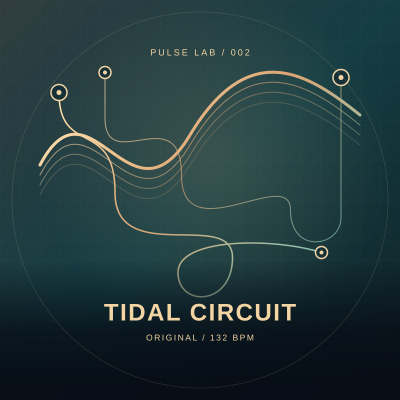
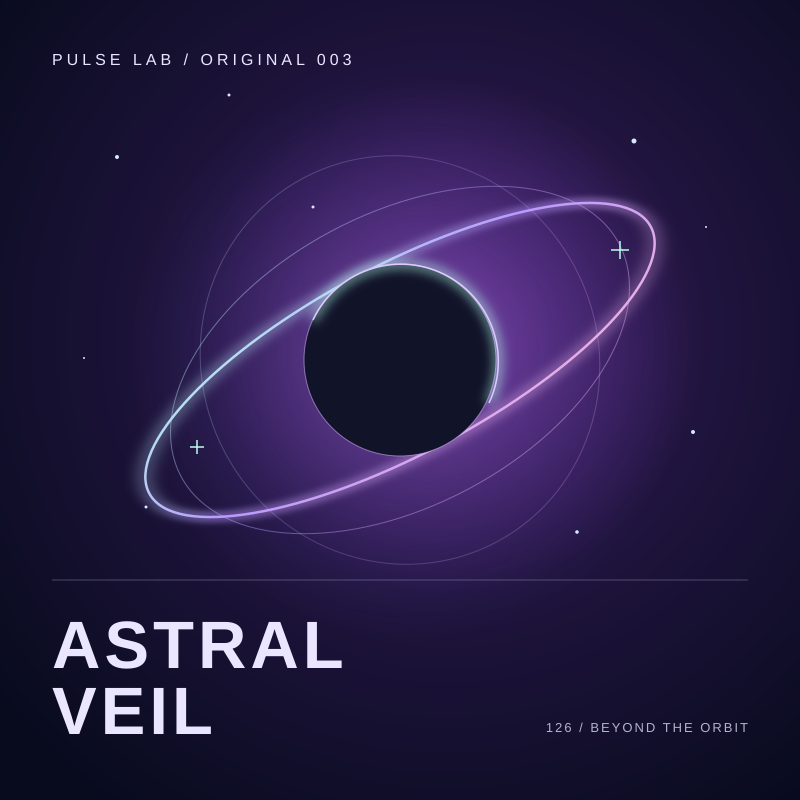
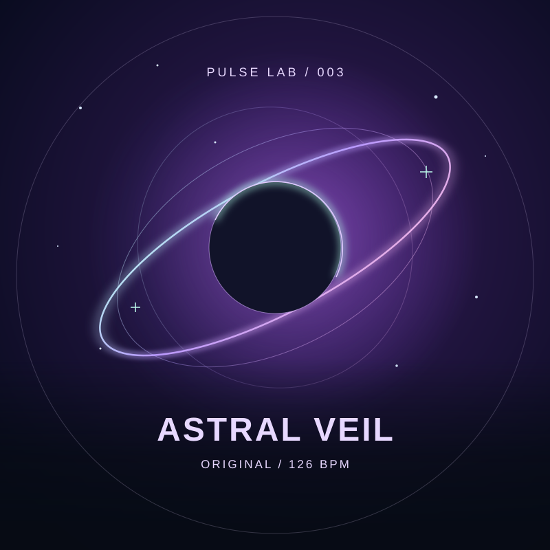

// FIND YOUR FREQUENCY
첫 입력으로 시작 · 곡을 고르면 자동 미리듣기
파일은 이 브라우저에서만 읽어요. 새로고침 후에는 다시 선택해주세요.
같은 곡으로 함께 시작하고 점수를 겨뤄요.






←→ 곡 선택 ·↵ 플레이 시작
PULSE LAB — ORIGINAL MIX
끝나지 않는 잔광, 다시 시작되는 비트.신스의 파동 위로 당신만의 리듬을 새겨보세요.
6키 실험: AFTERGLOW LEVEL 1 / ASTRAL VEIL LEVEL 2·3
헤드폰을 쓰면 비트가 더 선명해져요.
// EVERY BEAT COUNTS
PULSE LAB / 148 BPM
DUO PLAY
같은 게임 서버 주소를 열고 방 코드를 공유하세요. 오리지널 곡으로 2명이 함께 시작해요.
같은 게임 서버 주소를 열고 방 코드를 공유하세요.
오리지널 곡 · 4 KEY · LEVEL 1·2·3
둘 다 READY면 카운트다운 후 자동 시작해요. 탭을 숨기거나 연결이 끊기면 경기가 중단돼요. 개인 음악과 6키는 솔로로 즐겨주세요.
MY MUSIC
파일은 서버로 전송하지 않아요. 이 브라우저에서 분석하고 재생해요.
MP3·WAV 등 · 40MB 이하12초~5분 · 모노/스테레오
음악 파일을 선택해주세요.
뒤로 갈수록 어긋나면 BPM을 조정해요.
계속 일정하게 어긋나면 위치를 조정해요.
BPM과 첫 박을 적용하면 노트 시간이 다시 계산돼요. 박자가 일정한 곡에 적합하며, 템포 변화·복잡한 리듬은 완벽히 맞지 않을 수 있어요. 롱노트는 자동으로 만들지 않아요.
테스트 기록은 저장하지 않아요. 기기 출력 지연은 게임 설정의 싱크 보정으로 조정해주세요.
MAKE IT YOURS
음정 없는 짧은 타격음. 곡 음량에 맞춰 강도가 조절돼요.
NEON HALO · 곡을 고르기 전의 기본 대기 음악.곡을 고르면 선택곡이 자동으로 흐르며, 선택곡 미리듣기는 위의 음악 볼륨으로 조절해요.
첫 10콤보, 이후 50·100·150콤보에서만 재생같은 구간은 곡당 한 번 · 짧은 전자 효과음
0%로 설정하면 입자와 팝 애니메이션이 꺼져요. 시스템의 동작 줄이기 설정도 적용돼요.
속도는 노트가 내려오는 빠르기만 바꿔요. 음악과 판정은 동일해요.
양수는 판정 시점을 늦춰요. 소리를 듣고 눌렀을 때 LATE가 반복되면 양수로 조정해보세요.
설정은 이 브라우저에 자동으로 저장돼요.
GET INTO THE GROOVE
왼쪽부터 D · F · J · K 키에 손을 올려두세요. 노트가 아래 판정선에 닿을 때 해당 키를 누르면 돼요. 터치 화면에서는 아래 레인 버튼을 누를 수 있어요.
ASTRAL VEIL LEVEL 2·6키의 길게 이어진 롱노트는 머리가 판정선에 닿을 때 누르고, 끝이 닿을 때까지 유지하세요. 중간에 놓으면 MISS예요.
일반 판정은 타격음과 화면으로 알려줘요. 첫 10콤보와 이후 50·100·150콤보에서만 효과음와 축하 효과가 나와요. 콤보가 끊겨도 같은 구간의 보상은 곡당 한 번만 나와요. 다시 플레이하면 보상도 초기화돼요. 설정에서 효과음를 들어보고 음량을 조절할 수 있어요.
ESC 일시정지 · ENTER 시작 / 재개처음이라면 레벨 1과 노트 속도 ×2.0을 추천해요.
TAKE A BREATH
다시 준비되면 이어서 플레이하세요.